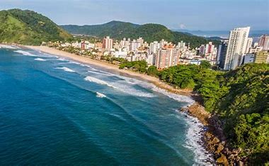
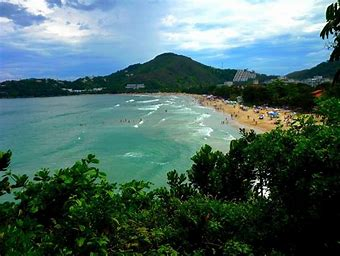

As 10 Melhores Praias de São Paulo
O estado de São Paulo é conhecido por suas praias deslumbrantes, que atraem turistas de todo o Brasil e do mundo. Com uma costa rica em biodiversidade e paisagens de tirar o fôlego, as praias paulistas oferecem opções para todos os gostos, desde locais tranquilos e isolados até pontos badalados com excelente infraestrutura.
A seguir, apresentamos uma seleção das 10 melhores praias do estado de São Paulo, cada uma com suas características únicas que prometem encantar os visitantes.
1° Praia de Itamambuca (Ubatuba)
A Praia de Itamambuca, localizada no litoral norte de Ubatuba, é um dos destinos mais procurados por surfistas e amantes da natureza. Conhecida por suas ondas fortes e consistentes, a praia é sede de importantes campeonatos de surf, tanto nacionais quanto internacionais.
Além do surf, Itamambuca oferece uma paisagem deslumbrante, com uma combinação de mar, rio e mata atlântica preservada. A praia é cercada por uma vegetação exuberante, proporcionando um ambiente tranquilo e ideal para quem busca relaxar e se conectar com a natureza.
2° Praia do Félix (Ubatuba)
A Praia do Félix, localizada no litoral norte de Ubatuba, é um verdadeiro paraíso que agrada tanto surfistas quanto famílias. A praia é conhecida por sua areia branca e solta, além de ser sombreada por árvores de abricó, proporcionando um ambiente agradável e fresco.
A praia é dividida em duas partes distintas: o canto esquerdo, com ondas fortes, é ideal para o surf e atrai muitos praticantes desse esporte. Já o canto direito possui águas mais calmas, formando uma grande piscina natural, perfeita para famílias com crianças pequenas e para a prática de stand-up paddle e caiaque.
3° Praia de Juquehy (São Sebastião)

A Praia de Juquehy, localizada em São Sebastião, é uma das praias mais encantadoras e populares do litoral norte de São Paulo. Com cerca de 3,5 km de extensão, Juquehy é conhecida por sua areia branca e fina, além de um mar de águas cristalinas que varia entre áreas calmas e pontos com boas ondas para o surf.
A praia é dividida em duas partes: o canto esquerdo, onde as ondas são mais fortes e atraem surfistas, e o canto direito, com águas mais tranquilas, ideal para famílias e crianças. Essa diversidade torna Juquehy um destino perfeito para todos os tipos de visitantes.
4° Praia Domingas Dias (Ubatuba)

A Praia Domingas Dias, localizada em Ubatuba, é um verdadeiro refúgio para quem busca tranquilidade e contato com a natureza. Com cerca de 400 metros de extensão, essa praia é conhecida por suas águas calmas e cristalinas, ideais para banho e atividades como stand-up paddle e caiaque.
A praia é cercada por uma vegetação exuberante da Mata Atlântica, criando um ambiente acolhedor e relaxante. No canto direito, há um córrego de água doce e uma bica de água proveniente da serra, perfeitos para se refrescar após um dia de sol. A ausência de quiosques e a infraestrutura limitada ajudam a manter a praia limpa e preservada, sendo um destino popular entre famílias e aqueles que preferem um ambiente mais sossegado.
5° Praia de Maresias (São Sebastião)

A Praia de Maresias, localizada em São Sebastião, é uma das praias mais famosas e badaladas do litoral norte de São Paulo. Com uma extensão de aproximadamente 5 km, Maresias é conhecida por suas areias brancas e finas, além de suas ondas grandes e consistentes, que a tornam um destino popular para surfistas de todo o mundo.
Maresias não é apenas um paraíso para os amantes do surf, mas também oferece uma excelente infraestrutura turística. A praia conta com uma variedade de pousadas, hotéis, restaurantes e bares, além de uma vida noturna vibrante, com algumas das baladas mais famosas da região.
6° Praia da Enseada (Guarujá)
A Praia da Enseada, localizada em Guarujá, é uma das praias mais populares e extensas da região, com cerca de 5,6 km de extensão. Conhecida por sua areia branca e fina, a praia oferece um mar de águas claras e geralmente agitadas, ideal para a prática de esportes aquáticos como surf e jet ski.
A infraestrutura da Praia da Enseada é excelente, com uma ampla oferta de hotéis, pousadas, restaurantes e quiosques ao longo da orla. Um dos destaques é o Acqua Mundo, um dos maiores aquários da América Latina, que é uma atração imperdível para famílias e crianças. Além disso, a praia conta com uma ciclovia e um calçadão, perfeitos para caminhadas e passeios de bicicleta.
7° Praia das Toninhas (Ubatuba)
A Praia das Toninhas, localizada em Ubatuba, é uma das praias mais versáteis e frequentadas da região. Com aproximadamente 1,3 km de extensão, a praia é conhecida por suas areias brancas e finas, além de suas águas cristalinas.
A praia é dividida em duas partes distintas: o canto esquerdo, onde as ondas são mais fortes e atraem surfistas e praticantes de bodyboard, e o canto direito, que possui águas mais calmas, ideal para famílias com crianças e banhistas. Essa diversidade torna a Praia das Toninhas um destino perfeito para todos os tipos de visitantes.
8° Praia do Lázaro (Ubatuba)

A Praia do Lázaro, localizada no sul de Ubatuba, é uma das praias mais procuradas da região, especialmente por famílias. Com cerca de 1,5 km de extensão, a praia é conhecida por suas areias finas e firmes, além de um mar calmo e cristalino que se assemelha a uma piscina natural.
A infraestrutura da Praia do Lázaro é excelente, com uma variedade de quiosques e bares de praia que servem bebidas geladas e deliciosas porções. A praia também é bastante sombreada pela presença de muitas árvores, proporcionando um ambiente agradável para relaxar.
9° Praia de Prumirim (Ubatuba)
A Praia de Prumirim, localizada no norte de Ubatuba, é uma das mais belas e preservadas praias da região. Com aproximadamente 1,2 km de extensão, a praia é conhecida por sua areia grossa e amarelada, além de ser cercada por uma vegetação exuberante da Mata Atlântica.
A praia é dividida em duas partes distintas: o canto direito, onde o mar é mais agitado e ideal para surfistas, e o canto esquerdo, que possui um costão rochoso e águas mais calmas. No lado direito, o Rio Prumirim deságua no mar, criando um ambiente perfeito para quem gosta de explorar a natureza.
10° Praia de Guaratuba (Bertioga)

A Praia de Guaratuba, localizada em Bertioga, é um destino encantador e relativamente pouco explorado, ideal para quem busca tranquilidade e contato com a natureza. Com cerca de 8 km de extensão, a praia é conhecida por sua areia branca e águas claras esverdeadas.
Um dos grandes atrativos da Praia de Guaratuba é o encontro do rio Guaratuba com o mar, criando um cenário único onde os visitantes podem escolher entre um banho de mar ou de rio. A praia é delimitada ao norte pela foz do rio Guaratuba e ao sul pela Praia de Itaguaré.